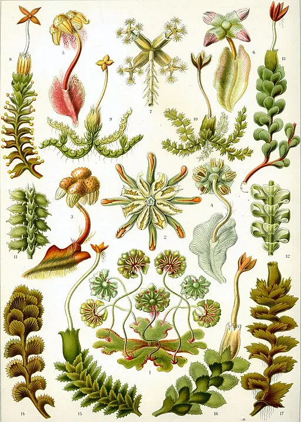

Mizutaniaceae
No widely accepted common name
Mizutaniaceae is a monotypic family of minute leafy liverworts in the order Jungermanniales, containing only Mizutania riccardioides from Southeast Asia. It is highly distinctive due to its transversely inserted, often distant leaves, the complete absence of underleaves, and unique branching patterns.
Overview
The Mizutaniaceae family is exceptionally small and specialized, comprising only a single known species, Mizutania riccardioides. This minute leafy liverwort holds a unique position within the order Jungermanniales, sometimes even placed in its own suborder (Mizutaniineae) due to its distinct combination of characteristics. It is found in Southeast Asia, particularly Borneo, growing as an epiphyte or epiphyll (on leaves) in humid forest environments.
Mizutania plants are tiny and thread-like, easily overlooked. Key features include leaves that are inserted transversely onto the stem (straight across, neither incubous nor succubous), the complete absence of underleaves (a third row of leaves on the ventral side), and often distant leaf spacing. The leaves themselves are typically deeply bilobed. Its phylogenetic relationships remain somewhat uncertain, highlighting its unique evolutionary path.
Quick Facts
- Scientific Name: Mizutaniaceae Furuki & Z.Iwats.
- Common Name: (None)
- Number of Genera: 1 (Mizutania)
- Number of Species: 1 (Mizutania riccardioides)
- Distribution: Southeast Asia (e.g., Borneo, Malaysia). Epiphytic or epiphyllous in humid forests.
- Evolutionary Group: Bryophytes - Liverworts (Marchantiophyta) - Jungermanniopsida - Jungermanniales (potentially suborder Mizutaniineae)
Key Characteristics
Note: Mizutaniaceae are minute, highly specialized leafy liverworts.
Gametophyte (Leafy Shoot) Structure
The dominant phase is the tiny leafy gametophyte:
- Form: Very small, slender, thread-like (filiform) shoots, often creeping or ascending, pale green or yellowish-green.
- Stems: Extremely thin, consisting of only a few rows of cells.
- Leaves: Arranged in two lateral rows, often distant (not overlapping).
- Shape: Typically deeply bilobed (divided into two narrow lobes), though sometimes unlobed leaves may occur. Lobes are often lanceolate or subulate.
- Insertion: Distinctly transverse (inserted straight across the stem, perpendicular to the stem axis).
- Cells: Small, thin-walled.
- Underleaves: Completely absent. This is a critical diagnostic feature.
- Branching: Reported to have a unique type of terminal branching ('Mizutania-type'), differing from the common Frullania-type or Microlepidozia-type terminal branching found in other groups. Ventral-intercalary branching may also occur.
Reproductive Structures
Likely dioicous (information can be scarce).
- Antheridia: Male organs are small, borne in the axils of specialized bracts (androecia), typically on short branches.
- Archegonia: Female organs are terminal on shoots or branches. They are enclosed within a well-developed perianth. The perianth is typically cylindrical or fusiform, often strongly plicate (pleated) towards the mouth, which is contracted.
Sporophyte
The sporophyte develops within the perianth (details may be infrequently observed due to rarity):
- Foot: Embedded in the stem apex tissue.
- Seta: Likely elongates at maturity, though may be relatively short compared to larger liverworts. Composed of few cell rows.
- Capsule: Small, ovoid or globose, likely dehiscing via 4 valves. Capsule wall likely bistratose.
Spores and Elaters
Contained within the capsule.
- Spores: Very small, spherical, likely finely papillose.
- Elaters: Present, slender, likely with 2 spiral thickenings.
Field Identification
Identifying Mizutaniaceae (Mizutania) is challenging due to its minute size and rarity. Identification relies on a combination of microscopic features and habitat/distribution clues.
Primary Identification Features (Microscopic Examination Often Required)
- Minute Size: Extremely small, thread-like plants.
- Transverse Leaf Insertion: Leaves attached straight across the stem.
- Bilobed Leaves: Leaves typically divided into two narrow lobes (though unlobed leaves can occur).
- Absence of Underleaves: No third row of leaves on the ventral side.
- Perianth (if fertile): Presence of a distinct, often pleated perianth surrounding the sporophyte base.
Secondary Identification Features
- Habitat & Distribution: Epiphytic or epiphyllous in humid forests of Southeast Asia (esp. Borneo).
- Distant Leaves: Leaves often spaced apart on the stem.
- Unique Branching Pattern: Specialized terminal branching type (requires expertise).
Seasonal Identification Tips
- Difficult to Observe Seasonally: Due to its minute size and specific habitat, finding it depends more on locating the correct microhabitat than on season, although growth might be favoured during consistently humid periods.
Common Confusion Points
Mizutania might be confused with other minute epiphytic/epiphyllous bryophytes:
- Cephaloziellaceae: Some genera (e.g., Cephaloziella) are also minute with bilobed leaves. However, they typically have succubous leaf insertion and possess small underleaves (though sometimes difficult to see).
- Some Lepidoziaceae (e.g., Kurzia): Can be filamentous with deeply divided leaves, but usually have incubous insertion and distinct underleaves.
- Some Lejeuneaceae: Many are minute epiphytes/epiphylls, but they typically have incubous leaves (often with a distinct ventral lobule) and usually possess underleaves. Their reproductive structures (perianths) also differ.
- Antheliaceae: Have transverse leaves and bilobed leaves/underleaves, but differ in cell structure and reproductive details, and typically grow on soil/rocks in alpine/arctic regions.
- Algae / Fungi / Lichens: Non-bryophytes found in similar habitats can be distinguished by cellular structure and lack of liverwort features like rhizoids, leaves, perianths, etc.
Key differentiator: The combination of minute size + transverse leaf insertion + bilobed leaves + complete absence of underleaves is highly indicative of Mizutania.
Field Guide Quick Reference (Microscope Likely Needed)
Look For:
- Minute, thread-like shoots
- Leaves transversely inserted
- Leaves often distant, typically bilobed
- Underleaves absent
- Plicate perianth (if fertile)
- Epiphytic/epiphyllous habitat (SE Asia)
Key Distinctions:
- Leaf insertion transverse (not incubous/succubous)
- Underleaves absent (unlike most leafy liverworts)
- Minute size and habitat
Notable Examples
The family is monotypic, containing only one known species.

Mizutania riccardioides
(Mizutania)
The sole representative of the family, found in Southeast Asia. It is extremely small and characterized by its transversely inserted, usually bilobed leaves, lack of underleaves, and unique branching. It typically grows on bark or living leaves in very humid forest environments.
Phylogeny and Classification
Mizutaniaceae holds a unique and somewhat enigmatic position within the Jungermanniales. Its combination of features (transverse leaves, no underleaves, unique branching, specialized perianth) distinguishes it clearly from other families. Molecular phylogenetic studies have confirmed its isolated position, leading some classifications to place it in its own suborder, Mizutaniineae, distinct from the major suborders Jungermanniineae and Porellineae. Other studies suggest a possible relationship near families like Cephaloziellaceae or Antheliaceae, but its exact sister group remains uncertain.
The family represents a highly specialized and possibly relictual lineage. Its minute size and specific morphological traits likely reflect adaptation to its epiphytic/epiphyllous niche in high-humidity environments. Studying Mizutaniaceae is important for understanding the full scope of morphological diversity and the deep phylogenetic relationships within the vast order Jungermanniales.
Position in Plant Phylogeny
- Kingdom: Plantae
- Division: Marchantiophyta (Liverworts)
- Class: Jungermanniopsida
- Order: Jungermanniales
- Suborder: Mizutaniineae (or placement near Cephaloziellaceae/Antheliaceae within Jungermanniineae)
- Family: Mizutaniaceae
Evolutionary Significance
Mizutaniaceae is significant for:
- Unique Combination of Characters: Demonstrates an unusual mix of features (transverse leaves, no underleaves, specialized branching) not found together elsewhere in Jungermanniales.
- Phylogenetic Puzzle: Its uncertain relationships highlight gaps in understanding the deep phylogeny of leafy liverworts and represent a potentially ancient, isolated lineage.
- Miniaturization and Specialization: Exemplifies evolutionary trends towards small size and adaptation to specific microhabitats (epiphytism/epiphyllism).